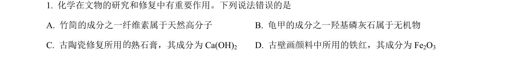
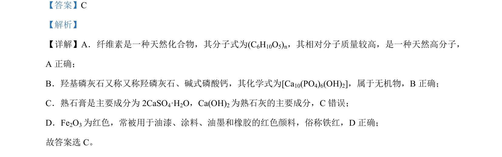

考点：物质分类 化学式 无机物 天然高分子

本题考查常见物质的组成、化学式与俗名的正误判断。

📄 原 PDF 第 1 页：
素材/真题/吉林/2008-2024·（吉林）化学高考真题/2023年高考化学试卷（新课标）（解析卷）.pdf
【答案】C 【解析】 【详解】A．纤维素是一种天然化合物，其分子式为(C6H10O5)n，其相对分子质量较高，是一种天然高分子， A 正确； B．羟基磷灰石又称又称羟磷灰石、碱式磷酸钙，其化学式为[Ca10(PO4)6(OH)2]，属于无机物，B正确； C．熟石膏是主要成分为 2CaSO4·H2O，Ca(OH)2为熟石灰的主要成分，C错误； D．Fe2O3为红色，常被用于油漆、涂料、油墨和橡胶的红色颜料，俗称铁红，D 正确； 故答案选 C。